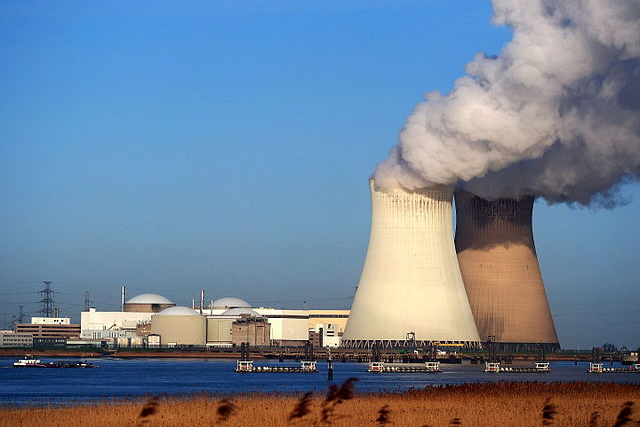
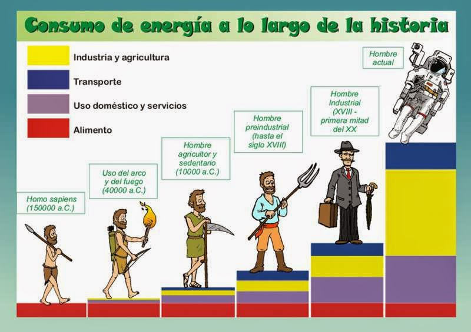
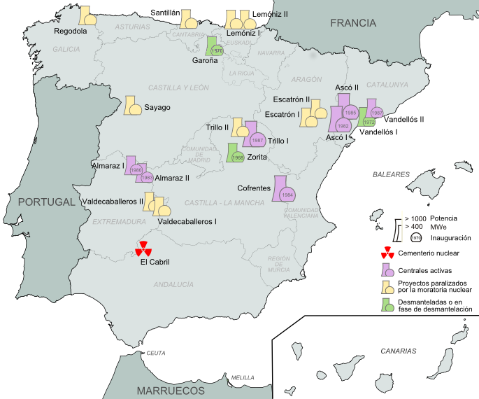

Mirad atentamente la siguiente fotografía correspondiente a dos TORRES DE REFRIGERACIÓN de una central nuclear.

Son enormes, ¿verdad?, ¿veis todo el humo de que están echando? Sí....
¿Son productos contaminantes, productos radiactivos? Si yo no supiese nada, pensaría que son dos chimeneas contaminando gravemente la atmósfera... Sin embargo, como me lo he estudiado, hoy sé que es vapor de agua. Sí, las chimeneas de las centrales nucleares expulsan a la atmósfera grandes cantidades de vapor de agua. Ese vapor de agua en gran parte formará nubes, y traerá lluvia. El vapor de agua está completamente limpio de radiactividad, pues el agua del circuito en cuestión no está en contacto con los materiales radiactivos. Esta es una primera gran ventaja: la contaminación ambiental es casi inexistente en condiciones normales de funcionamiento.
Ahora nos fijamos en la producción de energía, de electricidad para tu móvil, para tu tablet, para tu ordenador, para la luz de tu cuarto, para tus auriculares, para tu televisión, la lavadora, la plancha, el frigorífico, el microondas... Como sabes los humanos cada vez consumimos más energía, mira la siguiente imagen:

Te hago una pregunta:
¿Cuántos paneles solares, cuantos molinillos de viento, cuantas presas hidráulicas habría que construir para sustituir la energía procedente del carbon, el gas y el petróleo? ¿Lo has pensado? Pues te lo voy a decir: habrá que quitar muchos árboles, destruir bosques, praderas, cortar el curso de muchos ríos... en definitiva destruir miles de parajes naturales, morirían miles de animales, porque harían falta miles de centrales de energía renovable.
En cambio se podrían poner en funcionamiento las centrales nucleares a medio construir, o bien unas nuevas. Si en España hubiese 15 centrales nucleares, con dos reactores cada una, se podría generar aproximadamente la mitad de la energía que necesita el país. Sin embargo solo quedan 5 centrales, que de media proporcionan el 12% de la energía generada en España cada año.

Ahora piensa que pasa en un día nublado de invierno, en el que hace mucho frío, no hay viento, y no ha llovido desde hace semanas... Lo primero es que todos tenemos frío, encendemos la calefacción, estamos en casa, ponemos la televisión, cogemos nuestra tablet o el móvil... en definitiva, estamos consumiendo mucha energía. Pero esa energía se necesita en esos días, no dentro de dos semanas cuando haga un día espléndido y estemos por ahí con nuestras bicicletas con nuestros amigos...
Sigue pensando... No hay viento, entonces no funcionan los molinillos de viento, y no producen la energía que necesitas en ese día de mucho frío.
Está nublado, entonces los paneles solares apenas generan energía, pues apenas hay luz solar, por tanto tampoco producen energía significativa ese día.
No llueve desde hace semanas, por tanto los ríos llevan poca agua, las presas se han ido vaciando... apenas se puede producir energía hidroeléctrica.
Sigue pensando... Si hacemos que casi toda la energía que se produce dependa de las fuentes de energía renovables, y las condiciones ambientales no son las adecuadas para el funcionamiento de ese tipo de centrales energéticas, NO TENDREMOS ENERGÍA PARA QUE LAS PERSONAS ESTÉN CALENTITAS EN SU CASA VIENDO LA TV...
En cambio la energía nuclear permite aumentar y bajar la potencia, es decir, permite llevar energía justo cuando se necesita. Esta es la gran ventaja de la energía nuclear frente a las renovables.